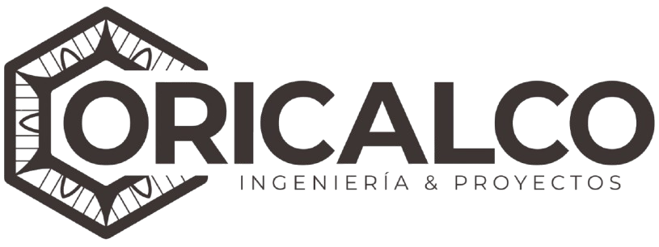
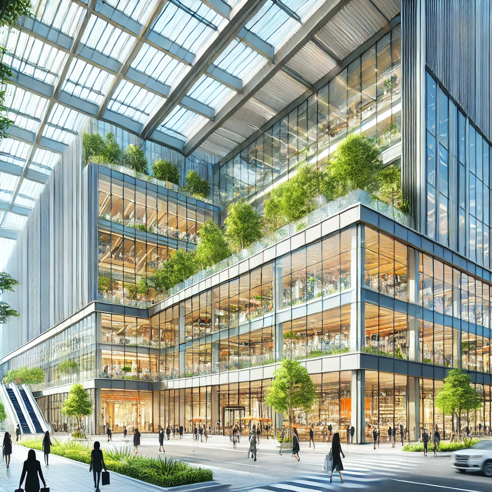
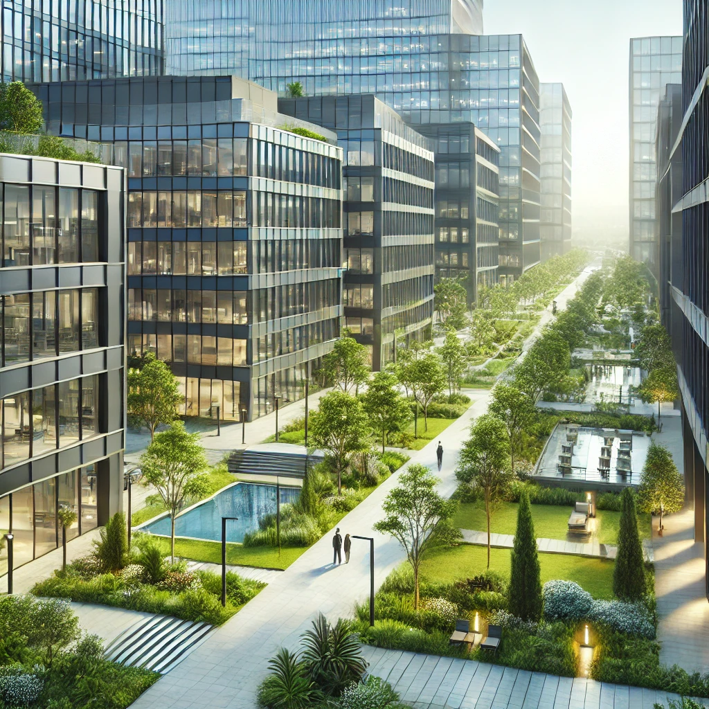

Construimos tus sueños, con calidad y profesionalismo
En Oricalco Construcciones, nos especializamos en la construcción de proyectos residenciales y comerciales de alta calidad. Con más de 3 años de experiencia, nuestro equipo está comprometido con la excelencia y la satisfacción del cliente.
Desde la planificación hasta la entrega, construimos hogares personalizados que cumplen con las más altas expectativas.
Diseñamos y ejecutamos proyectos comerciales que garantizan funcionalidad y estética en todos los detalles.
Transformamos y renovamos espacios con un enfoque innovador para mejorar tanto la estética como la funcionalidad.
Construcción del centro comercial, un hito arquitectónico en la ciudad.
Residencias de lujo con diseño moderno y acabados de alta calidad.
Parque industrial diseñado para maximizar la eficiencia y la sostenibilidad.
